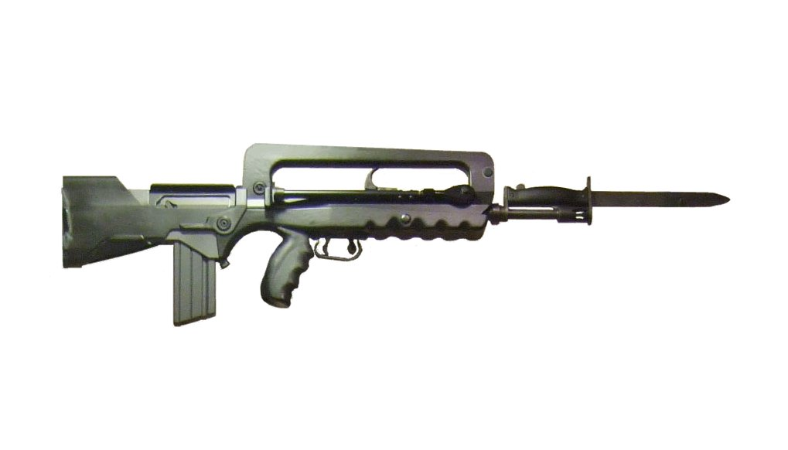

FAMAS突擊步槍

FAMAS（法語全名：Fusil d'Assaut de la Manufacture d'Armes de St-Étienne，意為「由聖-艾蒂安生產的輕型自動步槍」）是一款由陸軍工業集團生產，法國軍隊裝備的制式突擊步槍，亦是著名的犢牛式步槍之一。
- FAMAS突擊步槍採用犢牛式設計，彈匣置於扳機的後方，特製鋁合金製成的機匣以玻璃纖維的外殼覆蓋著。其槍機拉柄位於固定式提把裡面，沒有無彈後定功能。其覘孔式後照門位於提把上方，若需要加裝瞄準鏡，使用者必須在提把裝上導軌適配器。與當代大部份突擊步槍不同的是，該槍與同樣由法國研製的AA-52通用機槍一樣皆運用了由匈牙利人帕爾·基拉利（Pál Király）設計的槓桿延遲反衝式（Lever-Delayed Blowback）運作原理，射速也比其他突擊步槍要高。射擊選擇桿設置在扳機護弓裡面，有全自動、單發及安全三種模式，彈匣後方則設有另一個選擇桿讓射手可選擇三發點放模式或全自動模式。
FAMAS F1重4.2公斤，採用法國制25發直彈匣供彈。後來推出的G2重3.8公斤，並為了適應北約制式SS109步槍彈而改用30發STANAG彈匣供彈，這樣有利於增加G2在國際市場上的競爭能力。FAMAS F1和G2都裝有一對位於護木兩邊的兩腳架，有利於射手在臥著射擊時提高射擊精度。握把底部有一活門，裡面存放著裝潤滑液的塑膠瓶。
值得注意的是，FAMAS F1本身是為發射法國生產的鋼製外殼5.56×45公釐M193子彈而設計，若使用外國製的黃銅外殼子彈會造成膛壓過高和拋殼時彈殼斷裂等嚴重故障，因此法國軍隊嚴格禁止在F1型上使用外國彈藥。雖然把槍膛鍍銘可有效解決大部份上述的問題，但使用黃銅外殼子彈在拋殼時仍然會導致彈殼變形，令彈殼無法在不重塑的情況下循環再用。
後推出的G2型則是為了適應5.56×45公釐北約制式SS109子彈而設計，因此並不存在F1型所出現的問題。G2型也可發射各種舊版M193彈，不過威力較弱。